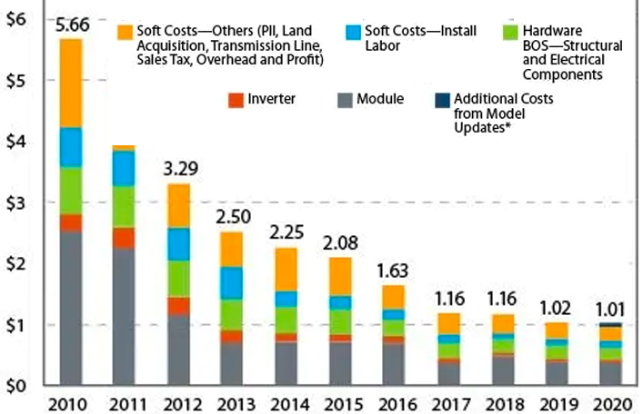

After last week’s installment, the one where I extended my two-year-long COP tirade, I had second thoughts. For my final installment of 2023, I’d like to revise my views somewhat. Specifically, I think there are reasons for cautious optimism that emerged from the latest session, provided we acknowledge that it’s going to get worse before it gets better and that fixing the blame isn’t going to fix the problem.
What we’ve seen, time and again, is that government “interference” in markets often has unintended consequences. That’s true both locally (“rent control”) and nationally (“subsidies” & “tariffs”). But, government guidance that chooses among possible directions can synchronize stakeholders—I’ve pointed out this effect in my earlier treatment 1 of DOE’s 2010 SunShot initiative, which publicized the audacious goal of $1 per watt of solar panels (installed), an objective that, principally without direct DOE involvement, drove a 5-fold decrease in costs across the board within a decade:

I’m newly (but still cautiously) optimistic because, even without a timeline, this concrete example shows that setting an objective at the highest levels prompts changes in the planning mindset. In the aftermath of COP28, governments, companies, and at least some individuals will consciously contemplate life after coal, petroleum, and natural gas.
It’s a baby step. Is it necessary? Absolutely. Is it sufficient? Certainly not.
The latter question can be cast as “In addition to reducing the combustion of geologic carbon, what will it take to control Earth’s climate from a technological perspective?” We have to accept that it is fantastical thinking (i.e., the other kind of climate denial) to suggest reaching engineering net zero through “decarbonization” alone, particularly within the next 27 years. Proposing strategies for reaching this goal through natural mechanisms has become the trajectory of this particular serial: Implementing “healing Earth with technology” in a practical, proactive, and productive manner. And I’m optimistic that it can be done!
With that, 2023 is done—I’m taking a long overdue vacation next week with a ‘stocktake’ of my own. Happy holidays to those who celebrate! 2 See you in January.
I don’t honestly understand why “to those who celebrate” should be added, but that seems to be customary these days, perhaps to avoid being labeled “culturally insensitive”. I think that “Merry Christmas and a Happy New Year, even to those who don’t celebrate the Christmas holiday or use a Gregorian calendar!” would be more to the point and wouldn’t deny happiness to those who don’t actually celebrate anything at this time of year.